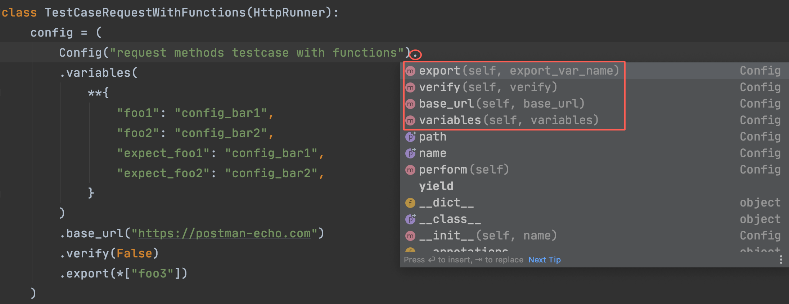
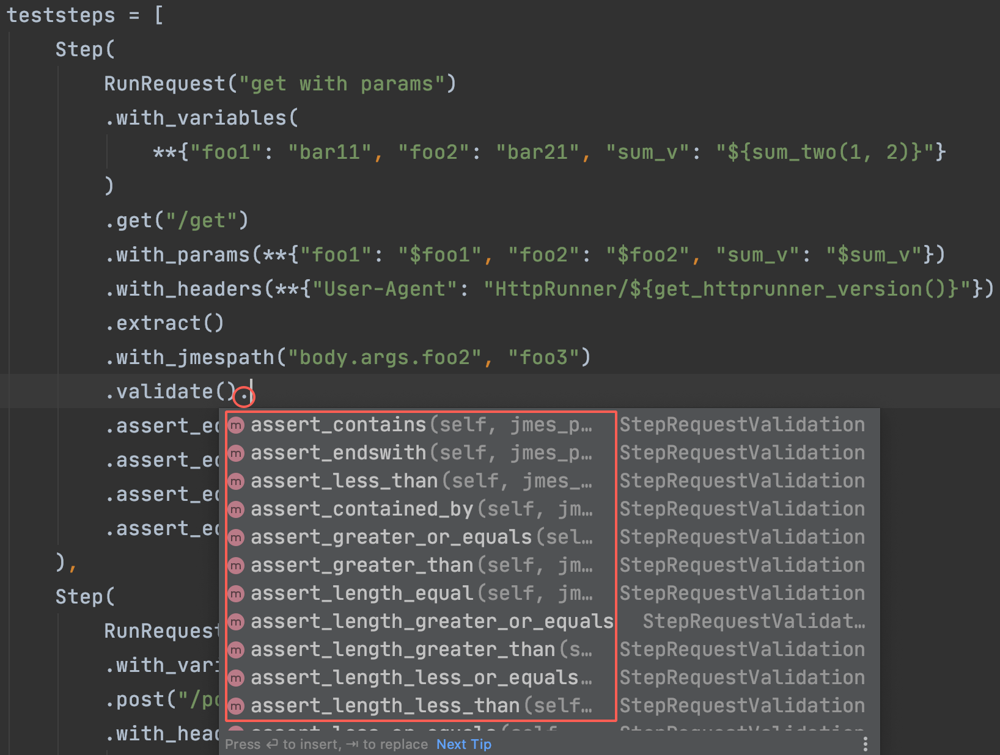
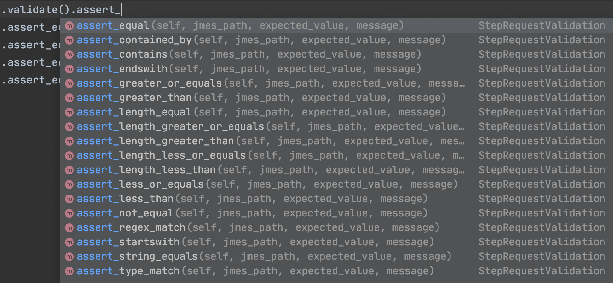

编写测试用例(python)
录制&生成测试用例
当产品进入被测状态后，最有效率的方式是捕获HTTP请求，利用HAR文件生成测试用例。详情请看录制&生成测试用例
基于生成的pytest用例，你可以根据需要进行调整，从而需要更多的了解用例格式。
用例结构
每个用例都是HttpRunner的子类，且必须包含属性：config和teststeps。
config：配置测试用例，包含base_url,verify,variables,exportteststeps：测试步骤的列表，每个步骤都对应一个API请求或另一个用例的引用，另外variables/extract/validate/hooks支持创建极其复杂的测试用例。
from httprunner import HttpRunner, Config, Step, RunRequest, RunTestCase
class TestCaseRequestWithFunctions(HttpRunner):
config = (
Config("request methods testcase with functions")
.variables(
**{
"foo1": "config_bar1",
"foo2": "config_bar2",
"expect_foo1": "config_bar1",
"expect_foo2": "config_bar2",
}
)
.base_url("https://postman-echo.com")
.verify(False)
.export(*["foo3"])
)
teststeps = [
Step(
RunRequest("get with params")
.with_variables(
**{"foo1": "bar11", "foo2": "bar21", "sum_v": "${sum_two(1, 2)}"}
)
.get("/get")
.with_params(**{"foo1": "$foo1", "foo2": "$foo2", "sum_v": "$sum_v"})
.with_headers(**{"User-Agent": "HttpRunner/${get_httprunner_version()}"})
.extract()
.with_jmespath("body.args.foo2", "foo3")
.validate()
.assert_equal("status_code", 200)
.assert_equal("body.args.foo1", "bar11")
.assert_equal("body.args.sum_v", "3")
.assert_equal("body.args.foo2", "bar21")
),
Step(
RunRequest("post form data")
.with_variables(**{"foo2": "bar23"})
.post("/post")
.with_headers(
**{
"User-Agent": "HttpRunner/${get_httprunner_version()}",
"Content-Type": "application/x-www-form-urlencoded",
}
)
.with_data("foo1=$foo1&foo2=$foo2&foo3=$foo3")
.validate()
.assert_equal("status_code", 200)
.assert_equal("body.form.foo1", "$expect_foo1")
.assert_equal("body.form.foo2", "bar23")
.assert_equal("body.form.foo3", "bar21")
),
]
if __name__ == "__main__":
TestCaseRequestWithFunctions().test_start()
调用链
HttpRunner v3.x最重要的功能之一就是支持调用链，使用调用链，不需要记住任何测试用例的信息，在IDE中编写测试用例时就可以智能完成。


config
每个测试用例都应该有config部分，可以配置用例级别。
name(必要)
指定用例名，将在log和报告中展示。
base_url(可选)
指定被测产品的通用Host，例如https://postman-echo.com。如果base_url被指定，测试步骤中的url只能写相对路径。当你要在不同环境下测试时，这个配置非常有用。
variables(可选的)
指定用例的通用参数。每个测试步骤都可以引用config variables。也就是说，step variables 优先级高于 config variables.
verify(可选的)
指定是否验证服务器的TLS证书 。 如果我们想记录测试用例执行的HTTP流量，这将特别有用，因为如果没有设置verify或将其设置为True，则会发生SSLError。
export(可选的)
指定输出的测试用例变量。将每个测试用例看作一个黑盒，config variables是输入变量，config export是输出变量。当一个测试用例在另一个测试用例的步骤中被引用时，config export将被提取并在随后的测试步骤中使用。
teststeps
每个测试用例都有1个或多个测试步骤（List[step]），每个测试步骤对应一个API请求或其他用例的引用。

注意：为了简单，在HttpRunner v2.x中的API概念已经被取消了。你可以将API定义为只有一个请求步骤的测试用例。
RunRequest(name)
测试步骤中的RunRequest用于发送API请求和校验response。
RunRequest的name用来定义测试步骤 name，将出现在log和测试报告中。
.with_variables
设置测试步骤的变量。每个测试步骤的变量都是独立的，如果想在多个测试步骤中共享变量，需要在config variables中定义。
测试步骤中的变量，会覆盖config variables中的同名变量。
.method(url)
设置http方法和Url，对应于requests.request 中的method和url。
如果base_url在config中设置了，url只能是相对路径部分。
.with_params
设置url的query，相当于requests.request 中的params。
.with_headers
设置请求的headers，相当于requests.request 中的headers。
.with_cookies
设置Http请求cookies，相当于requests.request 中的cookies。
.whth_data
设置Http的请求Body，相当于requests.request 中的data。
.with_json
设置Http请求json格式的Body，相当于requests.request 中的json。
extract
.WITH_HMESPATH
利用jmespath提取Json Response body内容。
with_jmespath(jmes_path: Text, var_name: Text)
- jmespath: jmespath表达式，详见JMESPath Tutorial
- var_name: 存储提取值的变量名，可以被后面的测试步骤引用。
validate
.assert_XXX
用jmespath提取response body，并验证提取值。
assert_XXX(jmespath: Text, expected_value: ANy, message: Text="")
- jmespath: jmespath表达式，详见JMESPath Tutorial
- expected_value: 指定期望值或变量，也可以调用方法
- message(optional): 用于描述断言失败原因
下图展示HttpRunner内置断言： 
RuntestCase(name)
RunTestCase用于在测试步骤中引用其他测试用例。
RunTestCase的name用于指定teststep name，将会在执行log和测试报告中展示。
.with_variables
跟RunRequest的.with_variables一样。
.call
指定引用的测试用例类。
.export
指定从引用的测试用例中提取的变量名。该变量在后面的test steps中可以引用。
import os
import sys
sys.path.insert(0, os.getcwd())
from httprunner import HttpRunner, Config, Step, RunRequest, RunTestCase
from examples.postman_echo.request_methods.request_with_functions_test import (
TestCaseRequestWithFunctions as RequestWithFunctions,
)
class TestCaseRequestWithTestcaseReference(HttpRunner):
config = (
Config("request methods testcase: reference testcase")
.variables(
**{
"foo1": "testsuite_config_bar1",
"expect_foo1": "testsuite_config_bar1",
"expect_foo2": "config_bar2",
}
)
.base_url("https://postman-echo.com")
.verify(False)
)
teststeps = [
Step(
RunTestCase("request with functions")
.with_variables(
**{"foo1": "testcase_ref_bar1", "expect_foo1": "testcase_ref_bar1"}
)
.call(RequestWithFunctions)
.export(*["foo3"])
),
Step(
RunRequest("post form data")
.with_variables(**{"foo1": "bar1"})
.post("/post")
.with_headers(
**{
"User-Agent": "HttpRunner/${get_httprunner_version()}",
"Content-Type": "application/x-www-form-urlencoded",
}
)
.with_data("foo1=$foo1&foo2=$foo3")
.validate()
.assert_equal("status_code", 200)
.assert_equal("body.form.foo1", "bar1")
.assert_equal("body.form.foo2", "bar21")
),
]
if __name__ == "__main__":
TestCaseRequestWithTestcaseReference().test_start()